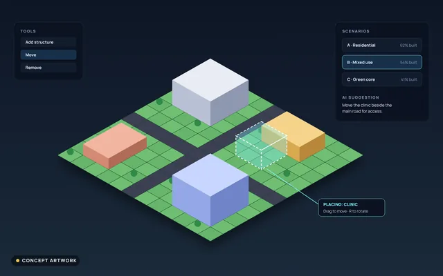

AIConcepts
AI Land Development Platform
Try a plan before you build it.
Concept
A product concept for AI assisted land planning. Users would work with a virtual model of a piece of land, add, remove and reposition structures, and compare different development scenarios before anything is built. Nothing has been implemented yet; this is a concept I am learning toward.


- Type
- AI and real estate technology, product concept
- Implemented
- Nothing yet
- My role
- Concept and product design
The problem and the opportunity
Plans on paper and static drawings are hard to imagine, and changing them is slow and expensive. Owners and small developers often decide what to build on a plot without seeing the alternatives side by side.
The concept
Put the land into an interactive 3D environment where ideas can be tried directly: place a structure, move it, remove it, and see the result immediately. Save each arrangement as a scenario and compare them.
Intended users
- Land owners deciding what to do with a plot
- Small developers comparing layouts
- Designers presenting options to clients
Proposed experience
Load the land
Start from the plot's shape and size.
Add structures
Drop in buildings, roads and green space from a library.
Rearrange
Move, rotate and remove elements, and see the layout change in 3D.
Compare scenarios
Save alternatives and compare them side by side.
Intended functionality
Interactive 3D land environmentPlanned
A navigable model of the plot.
Add, remove and reposition structuresPlanned
Direct manipulation of every element.
Development scenariosPlanned
Saved layouts to compare.
Visualising proposed arrangementsPlanned
Clear views of what each scenario would look like.
None of these exist yet. They describe the concept.
Potential AI integration
- Suggesting layouts that fit the plot
- Checking a layout against simple rules such as access and spacing
- Simulations that help compare scenarios
Current learning and direction
I am learning the 3D and simulation side needed to prototype this, starting with interactive environments, which I already work with in Roblox Studio.
Future possibilities
- Cost and material estimates per scenario
- Sharing scenarios with clients
- Use for estates and community planning
About the image
The image at the top is concept artwork. There is no working platform or AI planning engine.